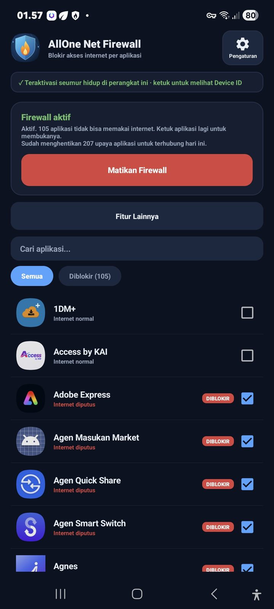
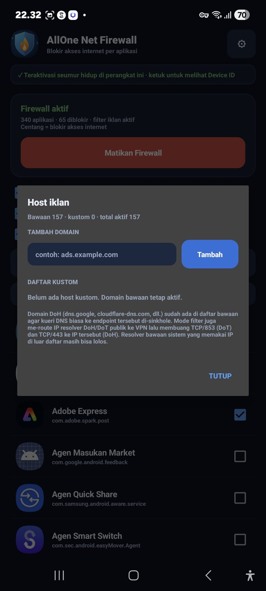
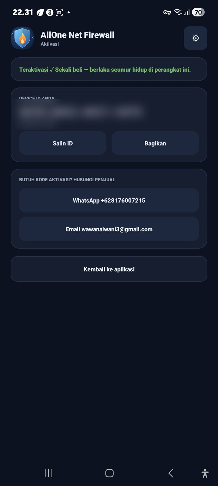
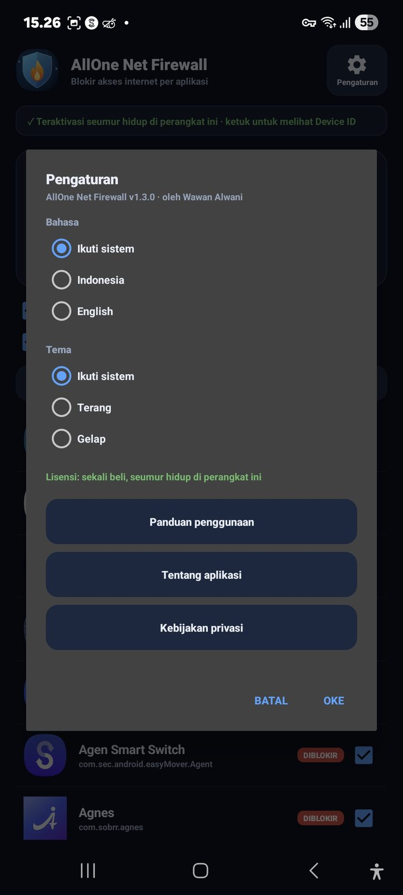

Blokir Internet Per Aplikasi
Pilih aplikasi yang ingin diblokir. Saat firewall aktif, akses internet aplikasi tersebut diputus sesuai aturan. Aplikasi lain yang tidak diblokir tetap dapat terhubung.
AllOne Net Firewall membantu memutus akses internet aplikasi yang Anda pilih dan memfilter host iklan serta pelacak melalui VPN lokal Android. Tanpa root, tanpa server VPN eksternal, dan tanpa iklan di dalam aplikasi.
Tanpa root • Trial gratis 7 hari • Lisensi sekali beli
AllOne Net Firewall adalah aplikasi firewall Android yang memungkinkan Anda memilih aplikasi mana yang boleh mengakses internet. Aplikasi ini juga menyediakan filter host iklan dan pelacak berbasis DNS serta pemblokiran sejumlah endpoint DNS terenkripsi.
Pengaturan dilakukan langsung dari perangkat tanpa membutuhkan akses root atau server VPN eksternal. Anda dapat memilih aplikasi, mengatur filter, lalu mengaktifkan firewall sesuai kebutuhan.
Kontrol jaringan dan filter DNS dalam satu aplikasi Android.
Pilih aplikasi yang ingin diblokir. Saat firewall aktif, akses internet aplikasi tersebut diputus sesuai aturan. Aplikasi lain yang tidak diblokir tetap dapat terhubung.
Filter DNS menggunakan daftar domain iklan dan pelacak yang tersedia di aplikasi untuk membantu membatasi koneksi ke host tersebut.
Kueri DNS ke domain yang diblokir dijawab dengan respons kosong sesuai mekanisme sinkhole, sehingga koneksi ke host tersebut dapat dicegah melalui DNS.
Tambahkan host yang ingin Anda blokir sendiri untuk menyesuaikan filter dengan kebutuhan perangkat.
Memblokir sejumlah endpoint DNS-over-HTTPS dan DNS-over-TLS yang umum agar sebagian jalur DNS terenkripsi tidak mudah melewati filter.
Cari aplikasi dengan lebih mudah untuk menentukan aplikasi mana yang akses internetnya ingin dibatasi.
Tampilkan aplikasi sistem jika Anda ingin mengatur aplikasi bawaan Android yang tersedia dalam daftar.
Pilihan untuk menjalankan kembali firewall setelah perangkat menyala atau selesai reboot.
Lihat notifikasi saat firewall berjalan, termasuk tombol untuk mematikan firewall.
Pilih Bahasa Indonesia atau English, serta tema terang, gelap, atau mengikuti pengaturan sistem.
Antarmuka AllOne Net Firewall sendiri tidak menampilkan iklan.
Menggunakan VPN Service bawaan Android sebagai mekanisme firewall lokal, tanpa memerlukan root.
Lihat langsung antarmuka AllOne Net Firewall di Android: dari memilih aplikasi yang akan diblokir, mengelola host iklan, sampai aktivasi lisensi dan pengaturan.




Android menyediakan VPN Service yang dapat digunakan aplikasi untuk membuat mekanisme pemfilteran jaringan pada perangkat. AllOne Net Firewall menggunakan kemampuan ini untuk menjalankan fungsi firewall.
Ini bukan layanan VPN untuk mengganti alamat IP atau lokasi. Lalu lintas tidak diteruskan melalui server VPN eksternal milik pengembang.
Catatan DNS: ketika filter iklan aktif, kueri DNS yang tidak diblokir dapat diteruskan ke resolver DNS publik sesuai konfigurasi aplikasi. Karena itu, jangan mengartikan “tanpa server VPN eksternal” sebagai “tidak ada komunikasi jaringan dengan pihak mana pun”.
Keduanya sama-sama memakai VPN Service Android, tetapi tujuannya berbeda. AllOne Net Firewall adalah firewall lokal, bukan layanan VPN untuk mengganti IP.
| Aspek | AllOne Net Firewall | VPN Biasa |
|---|---|---|
| Tujuan utama | Memblokir internet per aplikasi dan memfilter host iklan | Menyambungkan perangkat ke server VPN |
| Server VPN eksternal | Tidak dibutuhkan | Dibutuhkan |
| Mengganti IP / lokasi | Tidak | Umumnya ya |
| Kontrol per aplikasi | Pilih aplikasi yang diputus aksesnya | Bergantung pada layanan VPN |
| Root | Tidak diperlukan | Tidak diperlukan |
Filter DNS membantu mencegah koneksi ke domain iklan atau pelacak yang tercantum dalam daftar pemblokiran. Anda juga dapat menambahkan host kustom sesuai kebutuhan.
Aplikasi turut memblokir sejumlah endpoint DNS-over-HTTPS (DoH) dan DNS-over-TLS (DoT) yang umum, termasuk endpoint tertentu dan port DNS terenkripsi yang menjadi sasaran filter.
Batasan penting: filter DNS tidak menjamin semua iklan akan hilang. Iklan yang menggunakan alamat IP langsung, konten yang sudah tertanam di aplikasi, atau jalur jaringan yang tidak bergantung pada DNS mungkin tetap tampil. Endpoint DoH yang tidak tercakup dalam daftar pemblokiran juga mungkin tetap dapat digunakan.
Menurut rancangan AllOne Net Firewall, aplikasi tidak
menyediakan akun pengguna, telemetri, atau backend pengembang.
Data aplikasi disimpan di perangkat dan fitur pencadangan
Android dinonaktifkan melalui pengaturan
allowBackup.
Aplikasi menggunakan VPN Service lokal untuk fungsi firewall dan tidak membutuhkan server VPN eksternal untuk memfilter koneksi aplikasi.
Namun, ketika filter DNS meneruskan kueri yang tidak diblokir, kueri tersebut dapat dikirim ke resolver DNS publik yang dikonfigurasi. Resolver tersebut dapat memproses informasi DNS sesuai kebijakan privasinya sendiri.
Untuk informasi lebih lengkap mengenai privasi, silakan baca Kebijakan Privasi AllOne Net Firewall.
Coba aplikasi terlebih dahulu. Jika ingin melanjutkan penggunaan, tersedia aktivasi dengan lisensi sekali beli.
Gunakan aplikasi selama 7 hari untuk mencoba fitur yang tersedia sebelum melakukan aktivasi.
Lisensi bukan langganan. Setelah pembelian dan aktivasi, lisensi berlaku seumur hidup pada perangkat yang diaktivasi sesuai ketentuan lisensi.
Salin Device ID dari aplikasi dan kirimkan kepada penjual atau admin melalui saluran kontak yang tersedia untuk memperoleh kode aktivasi.
Batasi koneksi aplikasi tertentu tanpa memutus internet semua aplikasi lain.
Blokir internet aplikasi yang tidak membutuhkan koneksi jaringan saat digunakan secara offline.
Gunakan filter DNS untuk membatasi koneksi ke domain iklan dan pelacak yang tercantum dalam daftar filter.
Bantu mengelola akses internet aplikasi pada perangkat bersama. Untuk penggunaan anak, tetap kombinasikan dengan pengawasan dan pengaturan keluarga yang sesuai.
AllOne Net Firewall adalah aplikasi Android tanpa root untuk memblokir akses internet per aplikasi dan memfilter host iklan serta pelacak melalui DNS.
Tidak. Aplikasi menggunakan VPN Service bawaan Android untuk menjalankan fungsi firewall tanpa root.
Bukan. VPN Service digunakan sebagai mekanisme firewall lokal, bukan untuk menyambungkan perangkat ke server VPN eksternal atau mengganti IP dan lokasi.
Tidak selalu. Filter DNS dapat membantu memblokir host iklan dan pelacak yang tercantum dalam daftar. Iklan yang menggunakan IP langsung atau konten yang tidak bergantung pada DNS mungkin tetap tampil.
Aplikasi berupaya memblokir sejumlah endpoint DoH dan DoT yang umum. Endpoint lain di luar daftar pemblokiran mungkin tetap dapat digunakan.
Menurut rancangan aplikasi, tidak ada akun, telemetri, atau backend pengembang dan data aplikasi disimpan di perangkat. Namun, kueri DNS yang tidak diblokir dapat diteruskan ke resolver DNS publik sesuai konfigurasi filter. Baca juga Kebijakan Privasi.
Tidak. Lisensi menggunakan sistem sekali beli dan berlaku seumur hidup pada perangkat yang diaktivasi sesuai ketentuan lisensi. Trial gratis tersedia selama 7 hari.
Salin Device ID dari aplikasi dan kirimkan kepada penjual atau admin untuk mendapatkan kode aktivasi.
Tersedia opsi untuk memulai firewall secara otomatis setelah perangkat menyala. Perilaku aktual dapat bergantung pada pengaturan Android dan izin sistem.
Dapatkan APK AllOne Net Firewall melalui tautan Google Drive berikut. Pastikan Anda mengunduh file dari sumber resmi.
Android • Tanpa root • Trial gratis 7 hari • Lisensi sekali beli
Pilih aplikasi yang akses internetnya ingin diputus, atur filter host iklan, dan gunakan firewall sesuai kebutuhan.